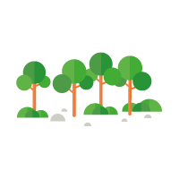

Conocer el Parque
¿Qué es el Parque Nacional? Conoce su Historia, Cartografía, Medio Natural, Entorno
Social, Órganos de Gestión, Proyectos de Investigación... Descúbrelo todo sobre el primer
Parque Nacional de España: el Parque Nacional Picos de Europa que comprende territorios
del Principado de Asturias, Cantabria y Castilla-León.
Visitar
¿Vas a visitar el Parque Nacional? Resuelve aquí tus dudas, consulta la normativa
vigente, descárgate los tracks y folletos para visitantes... Consulta los horarios de
los Centros de Visitantes, puntos de información o los miradores para disfrutar de las
mejores vistas del Parque Nacional.

Conservar
¿Cómo se gestiona un Parque Nacional? ¿Cuáles son las actividades o proyectos de
conservación y seguimiento? El urogallo, el quebrantahuesos o los humedales
continentales son sólo algunos de los proyectos más urgentes de conservación en el
Parque Nacional.
Investigar
Los Parques Nacionales son ámbitos excepcionales para desarrollar programas de
investigación. Infórmate aquí de los estudios realizados o recibidos por el Parque
Nacional. Solicita aquí tu permiso de investigación en el Parque.
NOTICIAS
Información Pública del Plan Rector de Uso y Gestión (PRUG) del Parque Nacional de
los Picos de Europa.
El día 1 de marzo de 2019 se publicaron en los respectivos boletines oficiales de
Cantabria, Principado de Asturias y Castilla y León los anuncios de inicio del periodo
de información pública y audiencia a interesados del Proyecto de Decreto por el que se
aprueba el Plan Rector de Uso y Gestión del Parque Nacional de los Picos de Europa, por
un plazo de 2 meses.
El plazo de presentación de alegaciones finaliza el 1 de mayo de 2019.
Leer más ...
Publicados en la plataforma de contratación del Sector Público el desistimiento de la
licitación previa y la nueva licitación del Servicio Técnico para la Organización y
Desarrollo Jurídico-Fiscal del Centenario del Parque Nacional.
En el Perfil del Contratante de esta web del Parque Nacional, vinculado a la Plataforma
de Contratación del Sector Público, figuran en formato pdf la Resolución de Desistimiento
y de Autorización de Nueva Licitación, el Anuncio de la Nueva Licitación, el Pliego de
Prescripciones Administrativas Particulares y el Pliego de Prescripciones Técnicas
Particulares correspondientes a este Servicio.
Fecha tope de presentación de proposiciones en esta nueva licitación: Jueves, 15 de
noviembre de 2018, a las 14,00 hs.
Leer más ...
Exposición del Concurso de la Bienal de Pintura Naturalista del Parque Nacional en el
Gran Hotel Pelayo.
El Concurso de Pintura Naturalista “Picos de Europa” es una iniciativa del Patronato del
Parque Nacional de los Picos de Europa, que lo instituyó para conmemorar el 90o
Aniversario de la declaración del Parque Nacional de la Montaña de Covadonga y preparar
su Centenario, el cual, precisamente, se ha cumplido en esta IV edición. Las anteriores
tres ediciones de este Concurso Bienal se desarrollaron en 2010, 2012 y, tras un parón
por la crisis económica, 2016. Según lo previsto, esta IV edición (convocada en 2017 y
con todas sus restantes fases en 2018) ha revestido un carácter especial, particularmente
por la cuantía de sus premios, al coincidir con el año en el que se conmemora el
Centenario de la declaración de dicho Parque Nacional, primero que se declaró en nuestro
país y antecedente directo del actual Parque Nacional de los Picos de Europa.
Leer más ...
Los “Sábados de Picos” en el MUJA
El Museo del Jurásico de Asturias (MUJA) continúa con su participación en la
conmemoración del Centenario del Parque Nacional, en esta ocasión programando una serie
de Conferencias y Talleres que se desarrollarán en su sede de Colunga durante los
Sábados de Octubre y Noviembre (salvo los de las semanas con puente festivo). La
programación prevista y la temática de las Conferencias y Talleres puede verse a
continuación:
Leer más ...
Seminario “100 años de Parques Nacionales” (Covadonga, 26/10/2018)
El Organismo Autónomo Parques Nacionales, en colaboración con el Consorcio
Interautonómico del Parque Nacional de los Picos de Europa, organiza, dentro de los
actos conmemorativos del Centenario de la declaración del Parque Nacional de la Montaña
de Covadonga (hoy en día, de los Picos de Europa), este Seminario, que se desarrollará
en el Gran Hotel Pelayo y el Salón de Actos de la Escolanía de Covadonga (Covadonga,
Cangas de Onís; ASTURIAS), el día 26 de Octubre del presente año, pudiendo realizarse
una excursión al Mirador de Ordiales el día siguiente, 27 de Octubre, si el tiempo
acompaña.
El Seminario está abierto, previa inscripción, a profesionales de la Red de Parques
Nacionales, profesionales de entidades e instituciones relacionadas con la Red
(personal de CCAA, miembros de Patronatos, universidad, instituciones de investigación,
profesionales a través de sus colegios profesionales, etc.) y público en general
interesado en la materia.
Leer más ...